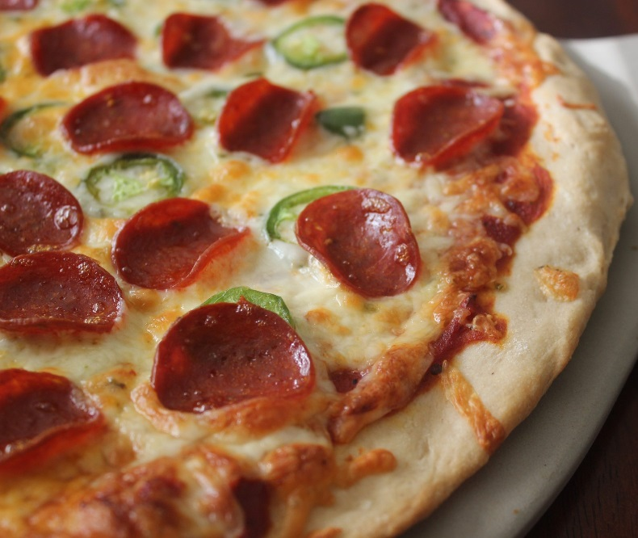

Pizza

Description
This is a great recipe when you don't want to wait for the dough to rise.
You just mix it and allow it to rest for 5 minutes and then it's ready to
go!! It yields a soft, chewy crust. For a real treat, I recommend you use
bread flour and bake it on a pizza stone, but all-purpose flour works well
too. Enjoy!
Ingredients
- 1 (.25 ounce) package active dry yeast
- 1 teaspoon white sugar
- 1 cup warm water (110 degrees F/45 degrees C)
- 2 ½ cups bread flour
- 2 tablespoons olive oil
- 1 teaspoon salt
Steps
-
Preheat oven to 450 degrees F (230 degrees C). In a medium bowl,
dissolve yeast and sugar in warm water. Let stand until creamy, about 10
minutes.
-
Stir in flour, salt and oil. Beat until smooth. Let rest for 5 minutes.
-
Turn dough out onto a lightly floured surface and pat or roll into a
round. Transfer crust to a lightly greased pizza pan or baker's peel
dusted with cornmeal. Spread with desired toppings and bake in preheated
oven for 15 to 20 minutes, or until golden brown. Let baked pizza cool
for 5 minutes before serving.